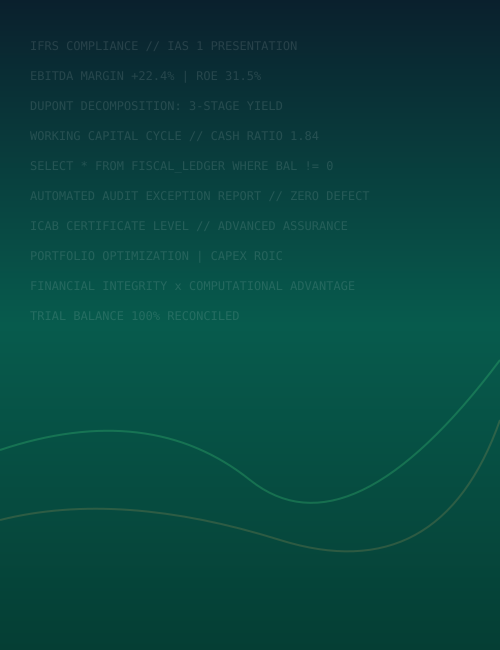

MD. SABBIR HOSHEN HOWLADER
I am an Accounting undergraduate developing high-conviction financial analysis, statutory audit readiness, and computerized ledger workflows. Blending traditional accounting discipline with computational data technology.
“Better Decisions.
Build Stronger
Futures.”
Explore Specialized Portfolios & Dossiers
Each facet of Md. Sabbir Hoshen's academic continuum, financial disciplines, applied projects, and empirical research is broken down into dedicated, focused sections below.
About Profile & Philosophy
From early academic foundations in Barishal to BBA undergraduate study, operating philosophy, Rover Scout service, and visual field chronicles.
Finance × Technology
The intersection of statutory accounting (IFRS/IAS), corporate finance (DuPont modeling), quantitative analytics, and automation architecture.
A Journey of Continuous Growth
Interactive timeline spanning 2010 to Present across 17 distinct milestones — primary schooling, SSC & HSC distinctions, BBA, and ICAB CA candidacy.
Projects & Field Engagements
Practical financial models, QuickBooks ledgers, and exploratory field initiatives across coastal eco-trails, college library archives, and Rover Scout logistics.
Industrial Sector Benchmarking
Cross-sectional comparative analysis examining working capital cycles, liquidity buffers, and capital efficiency across Bangladesh's core industries.
Analytical Toolkit & Skills
Hands-on proficiencies in Microsoft Excel, Python (Pandas/NumPy), MySQL relational queries, QuickBooks, and statutory accounting standards.
Initiate Professional Contact
Direct electronic mail, phone, WhatsApp, and interactive inquiry form for accounting, financial modeling, or audit assurance collaboration.
Executive Curriculum Vitae
Complete formal credentials, institutional affiliations, GPA distinctions, and structured resume with print and PDF export support.

“Finance is my domain.
Technology is my tool.”
Ready to Initiate Dialogue?
Whether discussing corporate accounting, statutory assurance, financial modeling, or quantitative research inquiries.